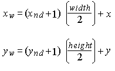

title: glViewport function (Gl.h) description: The glViewport function sets the viewport. ms.assetid: 11816b2f-ee18-42ef-a782-2e96699dd087 keywords:
The glViewport function sets the viewport.
void WINAPI glViewport(
GLint x,
GLint y,
GLsizei width,
GLsizei height
);
x
The lower-left corner of the viewport rectangle, in pixels. The default is (0,0).
y
The lower-left corner of the viewport rectangle, in pixels. The default is (0,0).
width
The width of the viewport. When an OpenGL context is first attached to a window, width and height are set to the dimensions of that window.
height
The height of the viewport. When an OpenGL context is first attached to a window, width and height are set to the dimensions of that window.
This function does not return a value.
The following error codes can be retrieved by the glGetError function.
| Name | Meaning |
|---|---|
| GL_INVALID_VALUE | Either width or height was negative. |
| GL_INVALID_OPERATION | The function was called between a call to glBegin and the corresponding call to glEnd. |
The glViewport function specifies the affine transformation of x and y from normalized device coordinates to window coordinates. Let (xnd , ynd ) be normalized device coordinates. The window coordinates (xw , yw ) are then computed as follows:

Viewport width and height are silently clamped to a range that depends on the implementation. This range is queried by calling glGet with argument GL_MAX_VIEWPORT_DIMS.
The following functions retrieve information related to glViewport:
glGet with argument GL_VIEWPORT
glGet with argument GL_MAX_VIEWPORT_DIMS
| Requirement | Value |
|---|---|
| Minimum supported client | Windows 2000 Professional [desktop apps only] |
| Minimum supported server | Windows 2000 Server [desktop apps only] |
| Header | Gl.h |
| Library | Opengl32.lib |
| DLL | Opengl32.dll |